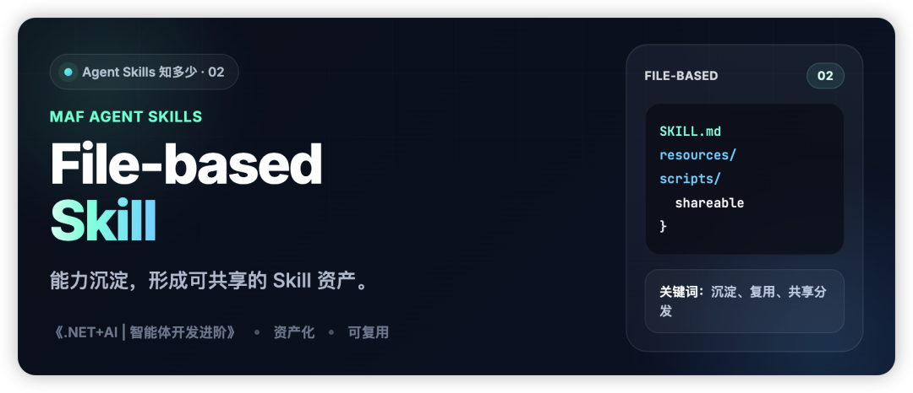

以下内容选自我精心打造的《.NET+AI | 智能体开发进阶》课程，如需系统学习，不妨阅读原文了解详情。

上一篇我们聊了 Inline Skill。
它最大的优点是轻：写得快、调得快、验证也快，非常适合作为 Agent Skills 的第一站。
但问题也很明显：一旦 Skill 不再只是临时能力，而是需要长期维护、共享复用，甚至交给不同角色协作，Inline Skill 就开始不够用了。
这时候，File-based Skill 的价值就出来了。
它解决的核心问题，不是“怎么写一个 Skill”，而是“怎么把 Skill 做成一个可以沉淀、共享、分发的能力资产”。
一、为什么 Skill 要从代码里走向文件结构？
Inline Skill 更像“当前代码里的能力”。
它适合快速试验，但不适合长期沉淀。因为一旦 Skill 越来越多，说明、资源、动作都混在代码上下文里，维护成本会迅速上升。
而 File-based Skill 的思路是：把 Skill 从代码片段，提升为一个有组织的文件单元。
这样做最大的意义，不是拆文件本身，而是让 Skill 开始具备资产属性：
• 可以单独维护 • 可以跨项目复用 • 可以被打包和分发 • 可以让非开发人员也参与部分内容维护
所以，如果说 Inline Skill 解决的是“先把能力接进来”，那么 File-based Skill 解决的就是“怎么把能力沉淀下来”。
二、File-based Skill 的核心，其实是分层
一个 File-based Skill，通常至少会包含三类内容：
• SKILL.md：描述 Skill 是什么、怎么用• 资源文件：提供知识、规则、背景信息 • 脚本文件：提供可执行动作
比如一个物流报价 Skill，目录就可以直接长这样：
shipping-rate-skill/
├── SKILL.md
├── resources/
│ └── rate-table.md
└── scripts/
└── quote-rate.csx其中 SKILL.md 可以负责声明这个 Skill 的身份和使用方式：
---
name: shipping-rate
summary: Quote shipping cost by destination and weight.
---
当用户询问运费时：
1. 先读取 rate-table 资源
2. 再调用 quote-rate 脚本
3. 回复中包含目的地、重量、费率和总价而 scripts/quote-rate.csx 则专注动作本身：
var destination = Args["destination"].GetString();
var weight = Args["weightKg"].GetDouble();
var rate = destination == "US" ? 8.5 : 10.0;
return new
{
destination,
weightKg = weight,
rate,
total = Math.Round(weight * rate, 2)
};这类结构的价值，在于一眼就能看出：说明在哪里、知识在哪里、动作在哪里。
SKILL.md 负责“身份和说明”，资源文件负责“知识”，脚本文件负责“动作”。
这意味着，File-based Skill 本质上不是“把代码拆成几个文件”，而是在做一件更重要的事：把说明、知识、动作分层管理。
一旦完成这一步，Skill 就不再只是一个零散能力，而开始变成一个结构化单元。
三、为什么它特别适合共享和分发？
这正是 File-based Skill 最有价值的地方。
因为它是文件化的，所以天然比 Inline Skill 更容易搬运。你可以把一个 Skill 目录交给另一个项目，也可以把它放进仓库、模板或团队共享目录里复用。
更重要的是，它让 Skill 的维护不再只属于开发者。
比如：
• 产品同学可以参与 SKILL.md的说明完善• 运营同学可以维护部分资源内容 • 开发同学只需要聚焦脚本逻辑和装载机制
这就让 File-based Skill 天然更适合团队协作。
从这个角度看，File-based Skill 的核心优势并不只是技术上的，而是协作上的。
它让 Skill 从“写给当前程序看的代码”，变成“团队可以共同维护的能力资产”。
四、它是怎么进入 Agent 运行链路的？
虽然叫 File-based，但它并不是让模型直接去读某个目录。
它的本质仍然是：先把文件结构解析成 Skill，再通过 Provider 装配到 Agent 的上下文链路里。
例如：
var provider = new AgentSkillsProvider("./skills/shipping-rate-skill");
var agentOptions = new ChatClientAgentOptions
{
Name = "ShippingAgent",
AIContextProviders = [provider]
};也就是说，模型真正消费的，不是磁盘上的文件本身，而是这些文件被组织后形成的 Skill 语义。
你可以把这个过程理解成：
文件结构负责定义 Skill，Provider 负责把 Skill 接进 Agent。
所以从运行机制上看，File-based Skill 和其他 Skill 写法并不是割裂的；真正不同的，是它对能力的组织方式。
五、它和 Inline Skill 的本质差异是什么？
一句话概括：
Inline Skill 偏“快速接入”，File-based Skill 偏“能力沉淀”。
前者适合先验证一个能力能不能跑通，后者适合把已经验证过的能力做成可以共享、可以复用、可以持续演进的资产。
所以它们不是谁替代谁，而是分别对应两个不同阶段：
• Inline：先跑通 • File-based：再沉淀
当你开始关心“这个 Skill 要不要长期存在”，File-based 就会比 Inline 更合适。
六、总结
File-based Skill 最重要的价值，不是把 Skill 拆成若干文件，而是把 Skill 从临时代码提升为可组织、可共享、可分发的能力资产。
它补上的，是 Agent Skills 从“能用”走向“可沉淀”的这一层。
下一篇，我们继续聊 Class-based Skill：为什么当一个 Skill 不只是要共享，还要进入系统内部治理时，强类型结构就开始变得重要。